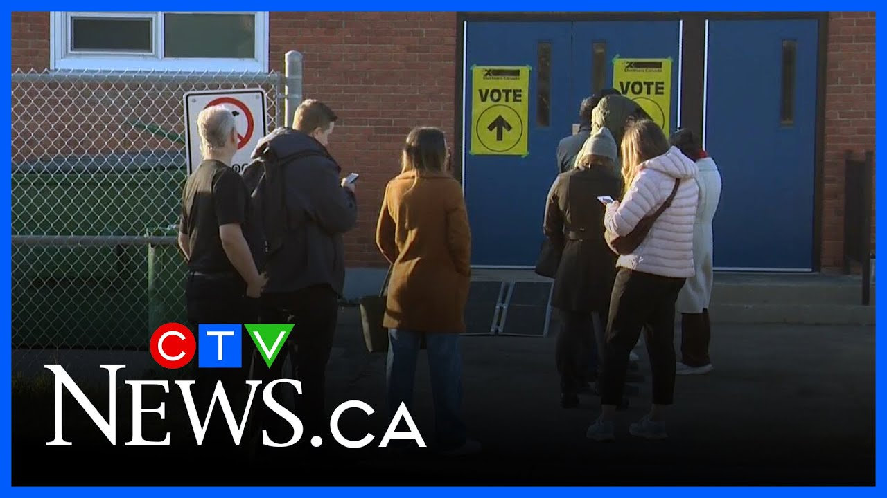

来B站一起耍噻～【Global每日双语简报】
【选民周一排队投票】
Summary: After weeks of campaigning, Canadians will decide the federal election today, with polling stations open until 7:30 PM and record advanced voter turnout.
摘要： 经过数周的竞选活动，加拿大人将在今天决定联邦选举，投票站开放至晚上7:30，提前投票人数创下纪录。

⏱️ Estimated Reading Time: 3 min
Thanks, Gina.
谢谢，吉娜。
After weeks of campaigning, Canadians will decide the federal election today.
经过数周的竞选活动，加拿大人将在今天决定联邦选举。
Mason Deati joins us now.
梅森·迪蒂现在加入了我们。
Mason, what do we need to know about casting our ballots?
梅森，关于投票我们需要知道什么？
Jefferson, the polling stations are now open and will stay open until 7:30 tonight.
杰斐逊，投票站现已开放，并将一直开放到今晚7:30。
At the polling station I'm at, there's been a steady stream of people, but there doesn't seem to really be a lineup inside of it.
在我所在的投票站，人流不断，但里面似乎并没有真正的排队。
To vote, all you have to do is head to your designated polling station.
要投票，你只需要前往指定的投票站。
With that voter information card, you were sent to the mail along with your ID.
选民信息卡和身份证件已通过邮件寄送给你。
So far, there's been a record turnout for the advanced vote with 7.3 million people turning out for that.
到目前为止，提前投票人数创下纪录，有730万人参与。
According to the latest Nanos numbers released yesterday, this race is still tight, too.
根据昨天发布的最新Nanos数据，这场竞争仍然激烈。
The survey done exclusively for CTV News and the Globe and Mail has the Liberals leading at 42.4%.
为CTV新闻和《环球邮报》独家进行的调查显示，自由党以42.4%的支持率领先。
The Conservatives trailing by just 3% at 39.4.
保守党以39.4%的支持率紧随其后，仅落后3%。
Those figures are accurate within 2.7% 19 times out of 20.
这些数字在20次中有19次的误差在2.7%以内。
The Prairies, however, the Conservatives do still hold a significant 20% lead, but there are a few contentious battleground writings in Calgary.
然而，在草原省份，保守党仍以20%的优势领先，但在卡尔加里有几个争议激烈的选区。
That includes the writing I'm at today, which is Calgary Confederation 338 Canada, a website that projects who will win seats based on polling, has the Liberals grabbing five seats in Alberta, Alberta.
这包括我今天所在的选区卡尔加里联邦338，一个根据民调预测席位归属的网站显示，自由党将在阿尔伯塔省赢得五个席位。
That's likely the reason why Mark Cardney made a stop in the province over the weekend.
这可能是马克·卡尼周末在该省停留的原因。
While several campaign events were cancelled this weekend in the aftermath of the Vancouver Festival attack, leaders did still have a chance to make their final pitches.
尽管在温哥华节日袭击事件后，本周末的几个竞选活动被取消，但领导人仍有机会进行最后的宣传。
We're over the shock of the betrayal, but we should never forget the lessons.
我们已经从背叛的震惊中恢复，但我们不应忘记教训。
Yeah, we have to look out for ourselves and we have to take care of each other.
是的，我们必须照顾好自己，也要互相照顾。
We need to take immediate action to bring change to our country.
我们需要立即采取行动，为我们的国家带来改变。
And that is why I have announced 100 days of change.
这就是为什么我宣布了“百日变革”计划。
Starting tomorrow, we will pass three laws.
从明天开始，我们将通过三项法律。
The affordability for a change act, the Safe Streets for for a change act, and the Brome jobs for a change act, all before summer break.
《变革可负担性法案》、《变革安全街道法案》和《变革布鲁姆就业法案》，全部在暑假前完成。
[Music]
[音乐]
And Jefferson CTV News will have live coverage and political analysis later tonight.
杰斐逊，CTV新闻将在今晚晚些时候进行现场报道和政治分析。
You can watch online and on TV as those votes come in live starting at five.
你可以从五点开始在线或通过电视观看实时计票。